空之轨迹3rd回路配法囧解
作者：ArielSharon 原帖地址 http://tieba.baidu.com/p/599705198
-V-亲爱的各位童鞋们，偶就是传说中的新手提问贴第一SF——A姐~
鉴于各位刚接触空之轨迹的童鞋们总是为配回路问题而苦恼。。。偶一个一个回复也比较没有效率，所以特发此教程，希望能帮到各位新手，-V-
至于回路的配法呢，由于本人系无墙流，虽然在以下的配法中已经有照顾到同时配墙的方法了，但是也不能避免有些法系角色就是漏了墙流配法，（除了小艾的貌似魔法配出墙的都忘记写了，只要记住有封魔/石化之理就有墙就行了）这一点就请见谅了
接下来，我们先以FCSC可爱无敌的正太男主角约修亚为例来说说导力器的构成
在下图的导力器界面上，我们可以看到右边小约的回路图上有2条线，一条是金色的，一条是蓝色的，这两条线分别代表不同的回路链，金色的回路链上一共有5个回路孔，蓝色的回路链上一共有3个回路孔，由于金色链比较长，它又被称为长链，蓝色链则被称为短链，这个导力器被称为5-3链导力器
回路各有自己的属性，下图中行动力属性是时8，攻击3的属性是火5，驱动2的属性是时3，省EP3的属性是时3空5幻3
同一回路链上各回路属性值可叠加，不同回路链上不可叠加。金色链上我装了行动力4，攻击3，驱动2，金色链的各系总属性值就是时11火5，按照魔法所需要的属性值，这条链子上可以出的魔法就是时间加速改、炎之箭等魔法，蓝色链上有行动力4、省EP3，总属性值就是时11空5幻3，可以出次元上升等魔法，金色链与蓝色链上合出的几种魔法加起来就是这个导力器合出来的所有魔法
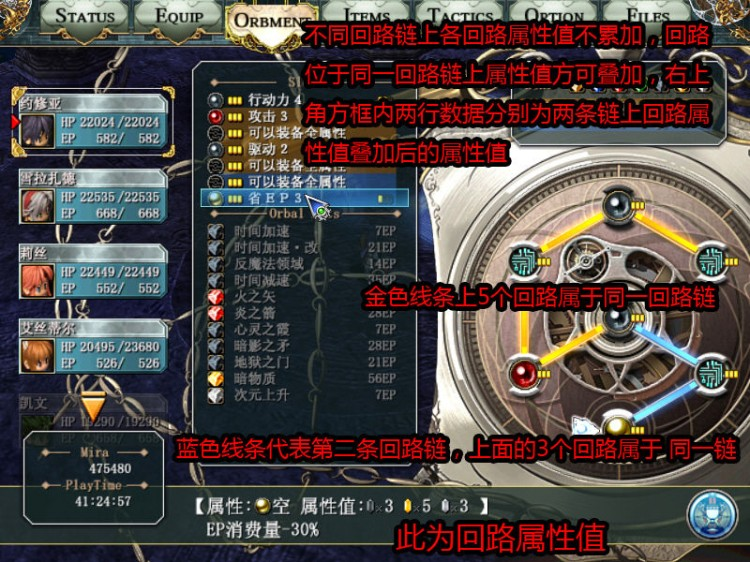
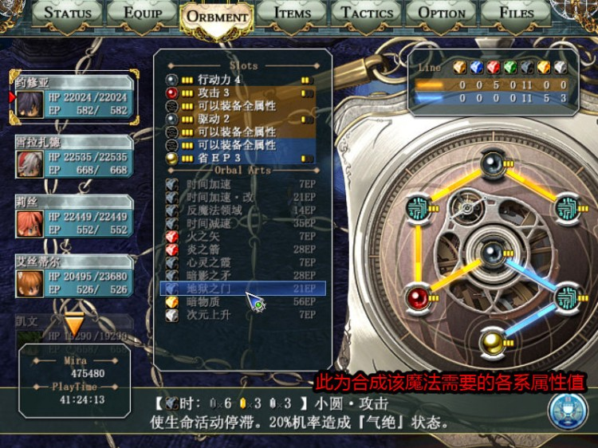
新手配回路有几个误区：第一个误区是：追求全屏魔法，忽视魔法的实用性，甚至为了合魔法不装基本回路。实际上高级全屏魔法不仅难配，而且大多数伤害附加低、驱动时间和冷却时间（硬直时间）一般也比较长，最典型的例子就是冰狱冥嚎，驱动时间是一般魔法的2倍左右，伤害却连冰蓝冲击（冰狱伤害附加150，冰蓝250）都不如，是十足的鸡肋魔法
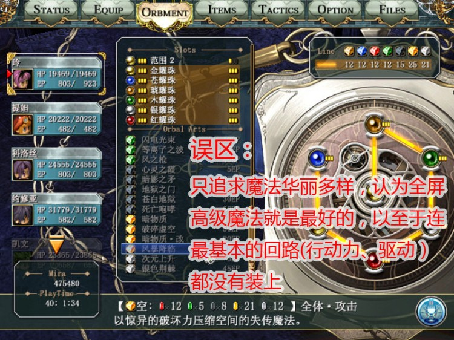
下面推荐几个3RD中较为实用的魔法：
攻击魔法：
1.暗物质改：高附加伤害（500），地点指定，加上范围2后范围为大圆，附带中心吸引，并且减敌方MOV，用了这个魔法，即使是菜刀的小圆技也有了用武之地，另外暗物质改配合连锁、范围魔法、卡位、拖走自爆怪等等都是相当不错，唯一的缺憾是硬直时间略长，不过基本无碍
2.大地之枪、炎之箭：性价比最高的单体魔法，攻击魔法中驱动最快硬直最短，高伤害附加（300）
3.燃烧之息：高附加伤害（600），驱动快硬直短
4.火山之咆哮：高附加伤害（600）的范围魔法，驱动快硬直短，省EP，配合暗物质改和陀螺舞等还是相当不错的
5.龙卷火焰：所有魔法中附加伤害最高的单体魔法（1000，排名第二的的风暴降临650，但是风暴降临要配必须舍弃攻击法师必备回路行动力、驱动、精神、省EP中其一，伤害附加却不比其他高伤魔法高多少，且没有特殊效果，还是鸡肋，至于PSP版风暴降临虽然伤害附加有1000，但是驱动和硬直都提升了差不多一倍，更鸡肋了），驱动速度相比其他高级魔法而言算很快的，硬直短，打击数多（21），无论是攻击敌人还是刷耀晶片都很不错
6.风之领域：最容易合出的范围魔法，虽然伤害附加极低，但是打击数多（11），刷耀晶片相当不错
7.泰坦之咆哮：最容易合出的全屏魔法，虽然伤害附加极低（50），但是驱动快硬直短，而且省EP，银之道如果不幸让凯文加了全体墙，拆墙就很有用
8.死亡咆哮：SC非常盛行的魔法，在3RD由于暗物质改等众多强力魔法的出现，光芒黯淡了，很容易合出的全屏魔法，合成只需金银两个耀珠，伤害附加极低（25），但是附带的即死效果清小兵不错，某星门的石化小怪就吃即死，在那一场应该是最有用的了
9.灾难冲击波：个人觉得不如导力停止实用，有些人觉得很好用，驱动快硬直短，附带ADF-20%的效果，伤害附加一般（200)
10.混沌烙印、银色荆棘：伤害附加为0，大多数情况下都是鸡肋，只在个别战斗中有用，比如希德周围那群小兵以及噩梦竞技场菲利普就吃混乱
辅助魔法：
1.时间减速、时间加速改：在半回合制游戏中SPD有多重要，我想我就不必再赘述了
2.大地之墙、盖亚之盾:墙流必备之神技，由于太无耻了所以......不用...对于墙流实际上盖亚不实用，耗EP太多而且驱动和硬直时间太长，惟一的优势是胜在全屏
3.强音之力复、星之守护：我个人比较喜欢用前者，后者不用神眼虽然也不难配，但是因为是用功能回路配的，其他魔法就很少了，而且防御属性在空轨中比较鸡肋，可以无视，强音的驱动时间也比较短
4.导力停止：个人比较喜欢的魔法，玩PSP噩梦难度时小约前期的主要工作之一就是放时减和导力停止（--+...），效果是全体ADF-30%（其实3RD不吃能力下降的BOSS不多，主要是各章最终BOSS和六章的四个守护者，就是各章最终BOSS也有吃能力下降的，比如蜘蛛），配合魔法流不错，遗憾的就是没有伤害值
5.沉默十字：对于一些可以打断驱动的BOSS和BOSS旁杂兵比较有用，虽然我更喜欢直接用打断技
6.虚弱领域：说明上写DEF-25%，实际效果是DEF-50%，配合菜刀不错，遗憾的是幻数值要求太高，需要用到比较鸡肋的银耀珠，所以很少用
7.鬼魅之痛：敌人STR-15%，其实没什么用，普通难度怪物打了不痛，噩梦加了怪物打的照样很痛，辅助人物没事情就给敌人加上好了
8.凝胶稠絮：其实还是没什么用，MOV虽然减的多但是魔法本身范围小，而且已经有暗物质改了，所以...没事时偶尔用用
9.回复术：这个就不用我说了吧，回复的缺点是驱动虽快但是硬直比较长，但是既然本人是无墙流，自然是只用回复不用墙的，个人感觉大回复复就够用了
新手配回路还有第二个误区：菜刀法师的回路不分，于是出现了菜刀不装攻击装防御或者攻击防御都装的情况，法师则装魔防，实在是看了就让人汗颜啊
菜刀必备的回路：攻击、行动力菜刀推荐的回路：HP、妨害、命中、移动、XX之刃/理(推荐石化/死/必杀），各种功能回路比如阳炎天眼等都可以往菜刀身上装菜刀不能装的回路：防御（装了-STR）
法师必备的回路：精神（辅助法师不是必备）、省EP、行动力、驱动法师推荐的回路：同等条件下属性值多的回路，例如木耀珠就好于风耀珠，银耀珠就好于幻耀珠法师不能装的回路：魔防（-ATS）
PS：回路是有等级的，普通回路1-3为一级回路，4为二级回路，耀珠为三级回路，功能回路则等级不一，如果回路装不上请先升级回路孔，XX之刃/理只能同时装一个
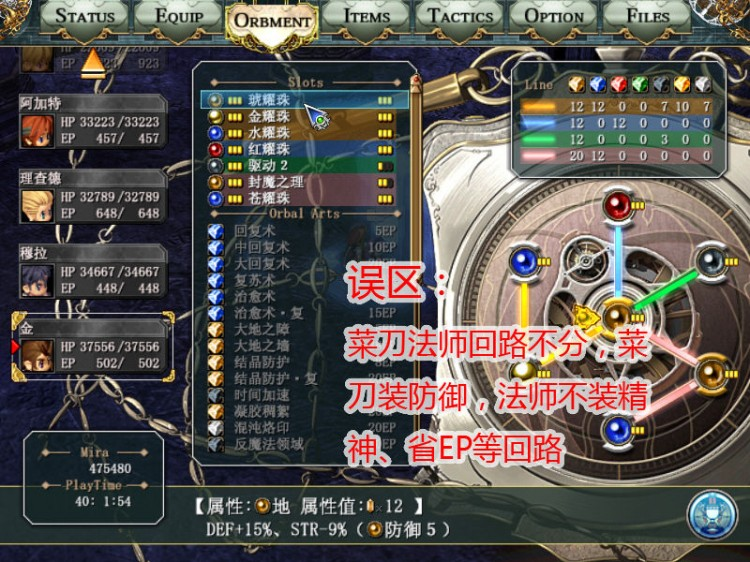
-V-好了，现在进入正题，开始华丽丽的回路搭配专辑：
约修亚：FC时期导力器很好，5-2链，由于驱动2在FC时期的属性值还算是不错的，双时限定影响不大，短链正好装攻击，长链则用于配魔法，是最早能合出炽炎地狱的人，SC导力器降级为5-3链，由于高级回路的出现驱动2的属性值沦为鸡肋，所以其导力器基本与4-3链无异，还好小约SC,3RD主要是菜刀，影响也不大
小约可以完全按菜刀回路配，也可以给自己配个强音之力复
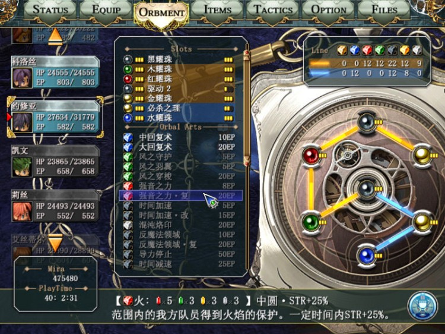
配出火山之咆哮和龙卷火焰也是不错的，菜刀的同时偶尔还能砸个魔法
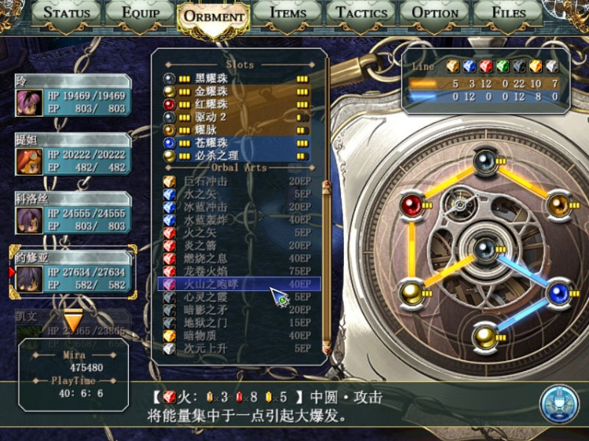
艾斯蒂尔：4-4链无回路限制，看似不怎么样的导力器其实有很多种配法，比如星之守护，全回复复，暗物质改，3RD小艾的太极轮是附加伤害仅次于樱花残月的S技，金刚击的伤害也不错，还是建议不要弄成纯辅助的
小艾的下面这种配法有时改时减、强音复、鬼魅、沉默十字、大地之墙、火山之咆哮、龙卷火焰、暗物质改等主打魔法，无论是用作辅助还是主攻都是不错的

小艾的纯奶妈回路，主打时改时减全回复，这里银耀是为了出死亡咆哮，银耀换成封魔/石化之理可出大地之墙，换成红耀可兼顾攻击
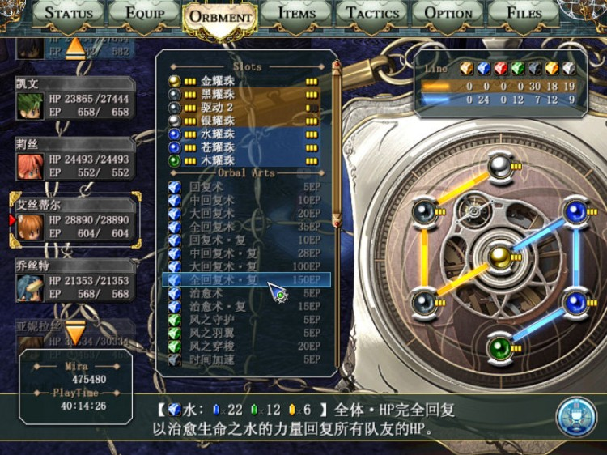
满足一些星守控的配法，主打时改时减、强音复、星守、鬼魅、沉默十字、暗物质改，把机功换成机功2还可出火山之咆哮
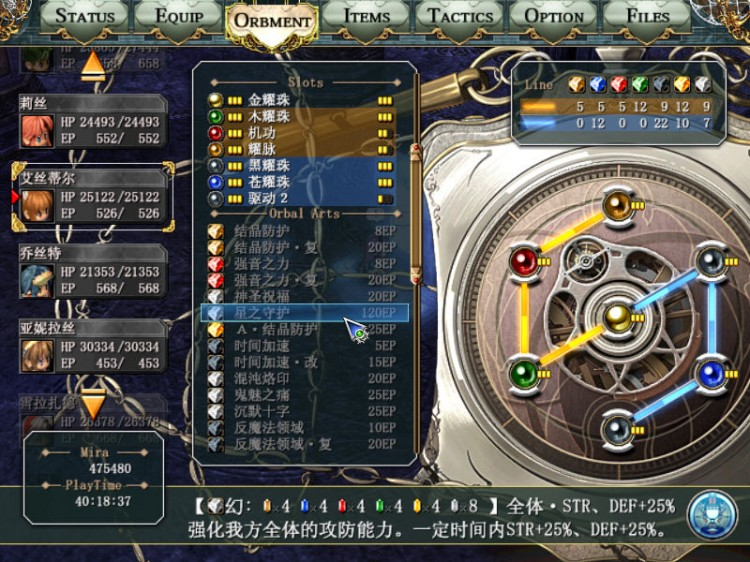
奥利维尔：一链，中心孔幻限定，虽然幻限定比较鸡肋，总体来说还是不错的导力器，但是3RD男性法师由于女性魔装黑丝绸和ATS武器的问题很是悲剧，于是裸ATS与公主相同，仅次于玲的王子殿下变成了辅助流。。。但是王子那糟糕的战技论辅助实用度又不如神父，所以。。。真让人同情啊--=
满足一些灾难冲击波控的配法，主打时改时减、强音复、灾难冲击波、虚弱领域、导力停止、龙卷火焰、银色荆棘
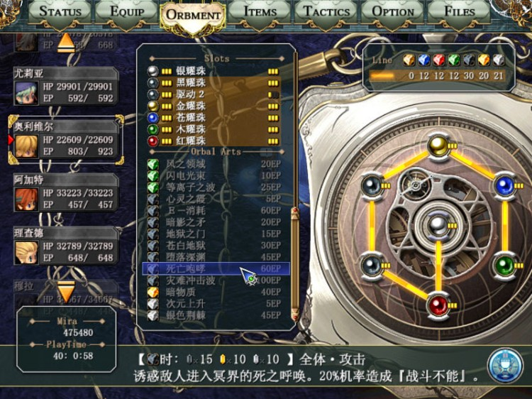
传说中的根源屏障（--=无敌鸡肋魔法，普通难度完全无用），主打时改时减、强音复、星守、导力停止、鬼魅、沉默十字、暗物质改、死亡咆哮，另外附带范围2
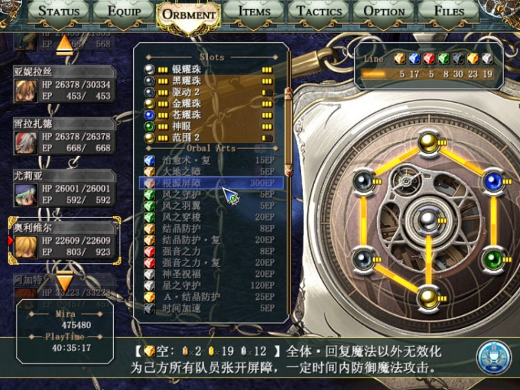
依然是鸡肋根源屏障，这次连强音都没了，只是多了个虚弱领域，当然作为暗物质改控暗物质改是少不了的
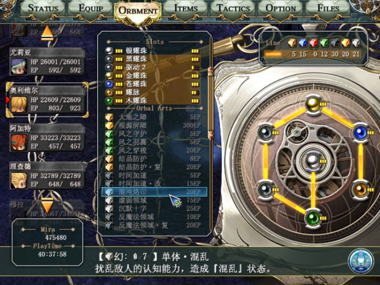
以暗物质改以及火系魔法为主的配法，主打时改时减、强音、星守、火山之咆哮、龙卷火焰、导力停止、鬼魅、沉默、暗物质改、死亡咆哮

拥有大回复复的配法，主打时改时减、强音、导力停止、虚弱领域、灾难冲击波、银色荆棘，但是没有暗物质改，把银耀换成谍报可出火山之咆哮、暗物质改、星守、鬼魅、沉默，但是没有虚弱（我还是比较喜欢有暗物质改的配法）
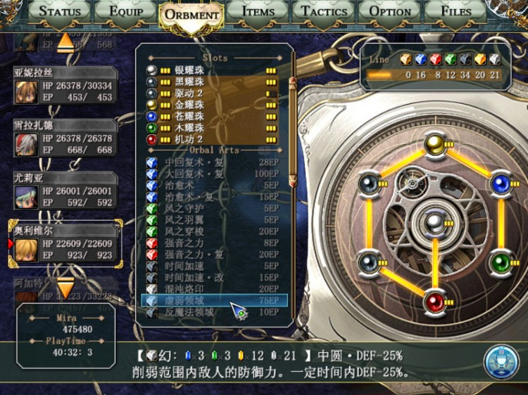
满足一些弧形日珥控（--=依然是鸡肋全屏）和灾难冲击波控的配法，主打时改时减、强音、星守、鬼魅、沉默、导停、灾难冲击波、弧形日珥、暗物质改
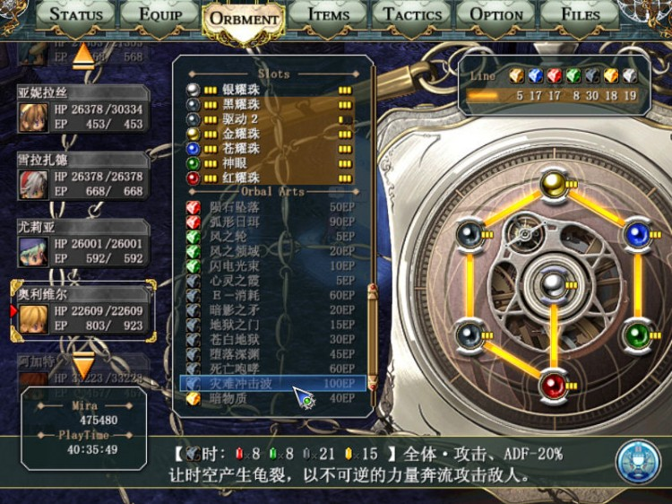
神父：6-2链，中心孔时限定，由于驱动2的存在以及行动力人人必装，导力器实用度与一链无限制无异，相当出色的导力器，而且3RD神父死亡制裁、魔枪、圣枪都是附加伤害极高的攻击技能，再加上有ATS武器，在噩梦难度人人猫咪装的状况下可谓魔法、辅助、菜刀样样皆能，另外一个S技星杯领域更是墙流必备
这种配法我的最爱，魔法华丽同时兼顾菜刀，主打时改时减、大回复复、强音复、鬼魅、沉默、导停、龙卷火焰、火山之咆哮、暗物质改，附带范围2
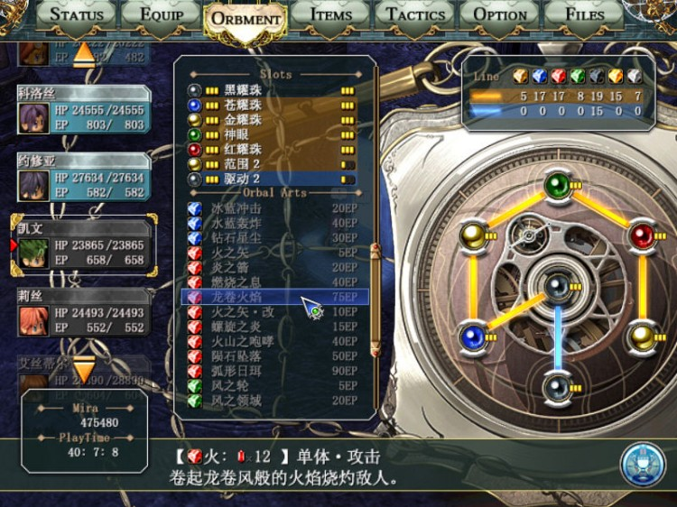
葱头在SC时期就是能无损配出星守的人，照顾下星守控，无神眼星守配法，主打时改时减、强音复、鬼魅、沉默、导停、龙卷火焰、火山之咆哮、暗物质改

CP纯辅助流葱头回路配法，超腰带+腰带+魂之理=每回合10点CP=无限墙（要是愿意也可以无限圣枪魔枪），主打时改时减、全回复复、沉默、导停、暗物质改

全回复复+暗物质改+强音之力并存的配法，附送一个圣灵术
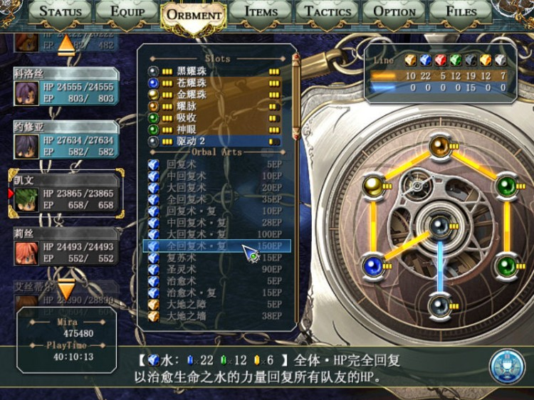
全回复复+暗物质改+强音之力并存的配法2，这次附送的可是星之守护
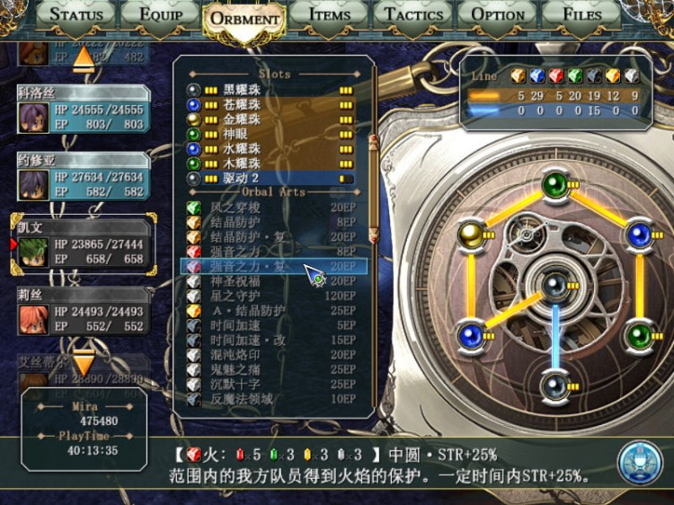
玲：一链无限制，魔法配法与神父相同，玲的战技不怎么样，除了帕蒂尔马蒂尔没有能看的，帕蒂尔马蒂尔硬直时间太长，也是比较一般的S技，只不过还不是太糟糕，所以主要还是走魔法流，玲的裸ATS虽是最高，但是最终武器不加ATS，ATS次于公主和修女，但是最终武器+10SPD，所以玲有速度优势，还是相当不错的法师，遗憾的是玲血太薄，普通难度下这点基本无碍，噩梦难度下对于无墙流还是放弃吧
有机功2的配法，不如换成红耀，魔法更多，并且兼顾S技，主要是普通难度EP不会用完，机功2没什么用，单挑BOSS机功2就很有用了
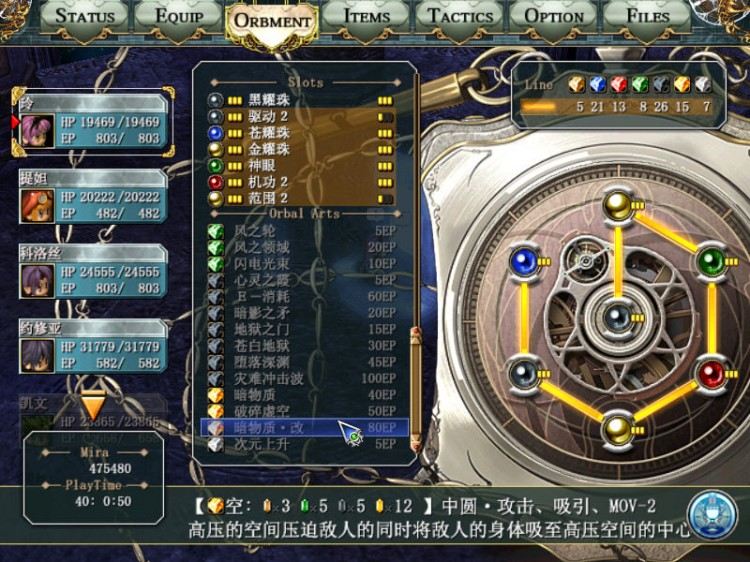
莉丝：5-3链中心幻限定，导力器一般，但是在第三章就可以配出暗物质改（二章石碑处有范围2，三章金银道石碑只有移动3），虽然要舍弃精神，但是前期在魔法的伤害附加和ATS之间，还是选择高伤害附加的魔法比较好，更何况莉丝本来裸ATS就不高，莉丝中后期由于有高ATS武器，ATS仅次于公主，再加上女魔装黑丝绸，属于强力法师，至于战技莉丝的攻击战技一般，S技附加伤害还不错但是动画太长所以很少放，最出彩的反而是她的无距离加血补CP技，配合红毛无限S，BUG光鬼、雪拉狐媚什么的都不错
莉丝基本我只用她放有范围2的暗物质改，这种配法主打时改时减、导停、暗物质改、死亡咆哮,如果想兼顾攻击就把范围2换成红耀
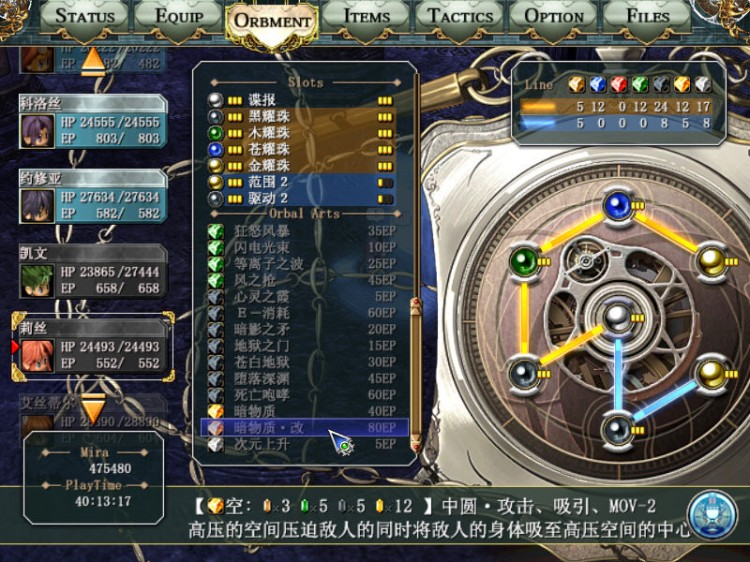
修女第三章暗物质改配法
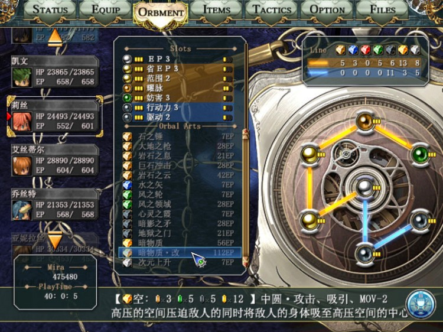
尤利娅：5-3链双空限定，同样是很早能合出暗物质改，虽然数值偏魔法流，但尤利娅一般不走魔法流而走连锁流，所以基本是上必杀做菜刀，下面是稍微兼顾魔法的配法
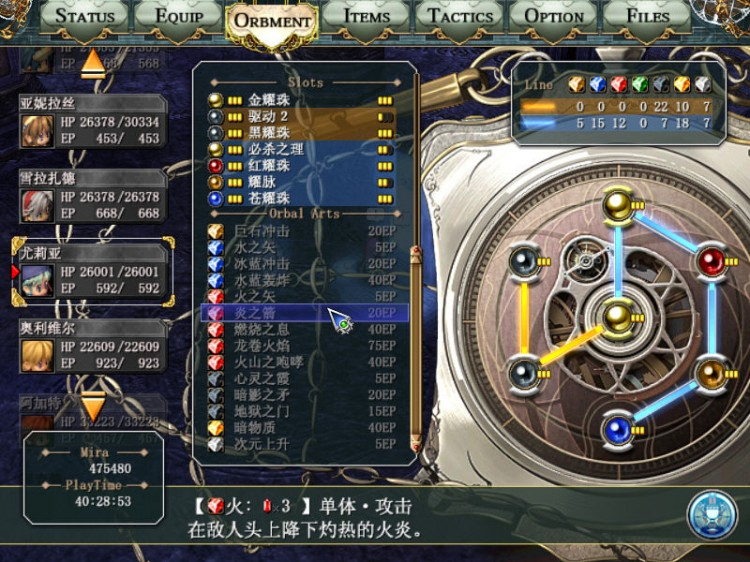
下面是暗物质改流配法
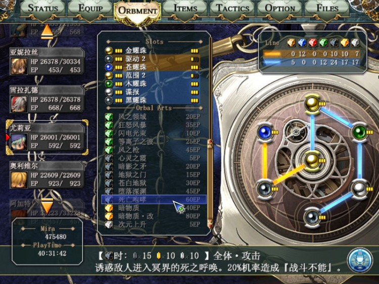
科洛丝：一链3水限定，魔法的配法很单一，FC,SC时期ATS裸值最高（与王子并列），3RD第二，带装备ATS值依然是最高，战技斗魂、光明都非常实用，3RD圣星伤害与ATS挂钩，前期装深红眼眸后S技伤害惊人，由于圣星是魔法伤害、物理判定，他人难以打动的深渊羊公主可以轻松全部秒杀
公主的标准回路，主打时改时减、导停、全回复复、死亡咆哮

公主的暗物质改配法，遗憾的是必须用神眼，神眼又只有一个，主打时改时减、导停、强音、星守、鬼魅、沉默、暗物质改
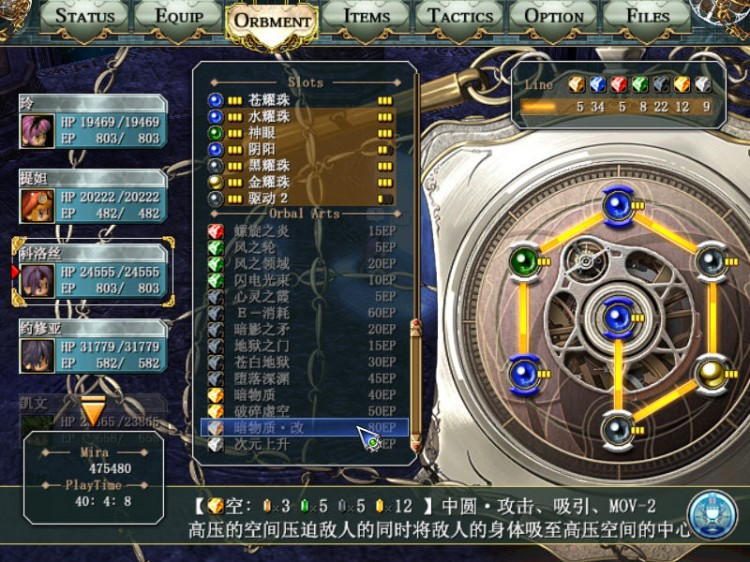
乔丝特：4-4链双地限定，主要作用就是放墙。。。其实小乔战技还好，有偷窃有降能力的有全屏S，只是她的各项数值都太糟糕，加上乔丝特的援助对刷装备晶片都很有用，所以她基本是万年板凳
这里的苍也可以换成红，琥也可以不装，就让那个孔空着，虽然我觉得没什么区别。。。反正她的主要工作就是放墙
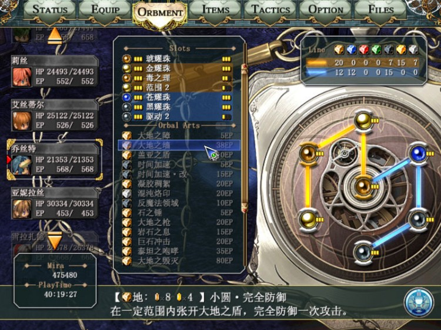
雪拉扎德：6-2链双风限定，裸ATS与小约相同，最终武器加150ATS，作为魔法流来说还是相当不错的，只是雪拉的战技过于强大，天堂之吻提人，狐媚暗随无限连（SPD=167，狐媚AT=2,SPD=251，狐媚AT=1），所以BOSS战雪拉是战技流，基本上不放魔法，至于打小怪只要合几个普通魔法就够用了
最便利的暗物质改配法，打小怪专用
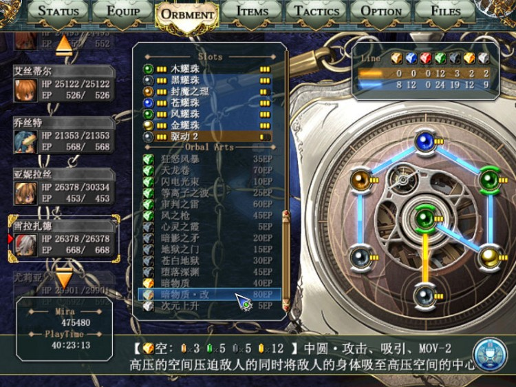
有大回复复、强音、星守和火山之咆哮的半辅助流配法，其实完全用不到...
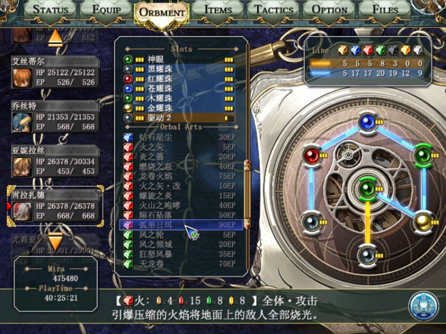
理查德：6-2链中心孔火限定，由于3RD火系魔法的盛行，导力器约等于一链无限定，各项数值都属于上游，各战技的硬直时间都非常短，尤其是光鬼斩无限连极其强大（SPD=234，光鬼AT=2），S技樱花残月是所有S技中附加伤害最高，所以拿他做魔法流简直是暴殄天物。。。虽然他的导力器相当不错，裸ATS也很高
小李子菜刀流配法，其实菜刀怎么配都无所谓了
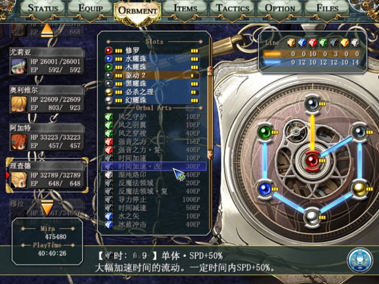
这个配法和神父的一样，很华丽，但是在小李子身上完全用不到的配法
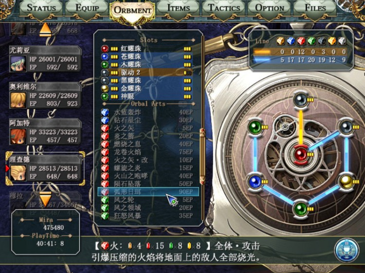
提妲：纯菜刀一只，虽然其实裸ATS和小艾一样，但是看她花花绿绿的链子就知道魔法流是不行的，所以还是按菜刀配吧，提妲的普通战技烟幕弹和回复弹都很实用，缺点就是血少，但是在中后期有了高达之后一跃成为第一血牛，加上变身后高达装备值变裸值，高达战技和普攻的硬直又短，在加状态后攻击和速度都非常强悍，是3RD三大BUG之一
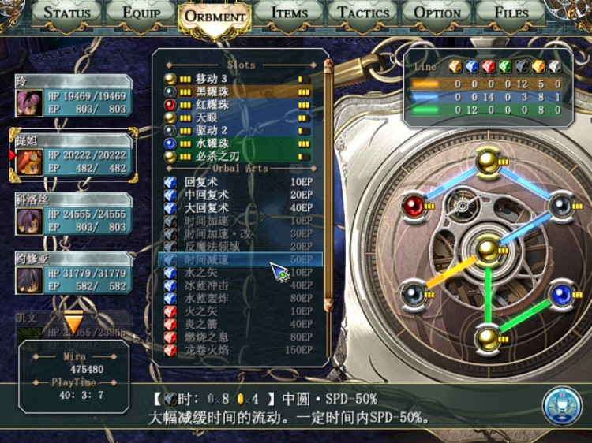
金叔：金叔依然纯菜刀，裸ATS是所有人中最低的，龙神功很强悍，攻防各加60%（当然了，加状态加的都是裸值），遗憾的就是战技侧重单体
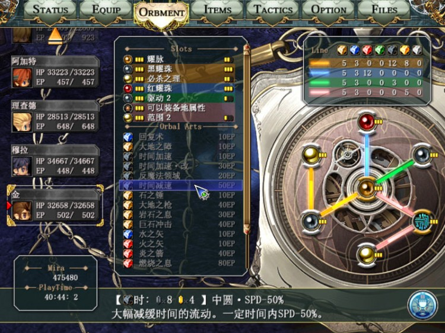
穆拉：纯菜刀一只，战技全面但是都比较一般，连锁时由于中心目标打2下这个BUG设定成为尤穆亚/艾雪最强最凶恶四人组的标配之一
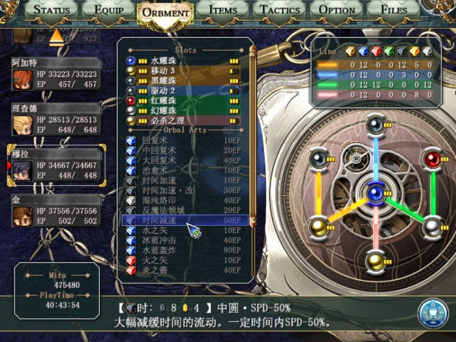
亚尼拉丝：纯菜刀，陀螺舞拉人非常强大，配合连锁非常好用，即使不玩连锁，对于一些BOSS战旁边小怪站位分散的情况来说还是很好用，一般来说让她站在最前排中间（有时第二排中间）可以拉到所有怪物
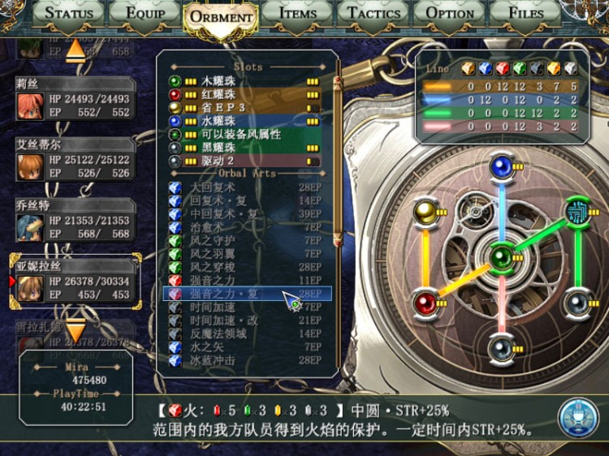
阿加特：纯菜刀，公牛之怒无限S+修女补CP技还是很强大的，遗憾的是3RD超斗魂和庭院泉水补CP盛行，所以CP不值钱了（噩梦难度下任何人超头巾+头巾/月刻都是被打一下就爆S，至于7人以上月刻+超头巾无限S流就更不用说了），阿加特反而因为战技硬直时间普遍比较长，而且做援助很好这两个原因而板凳了
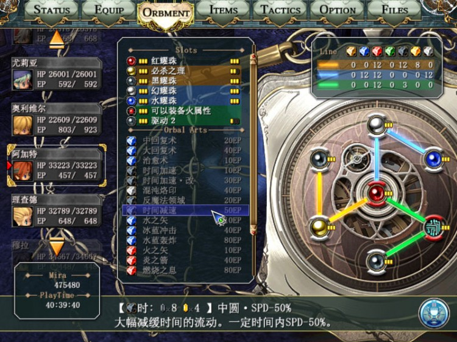